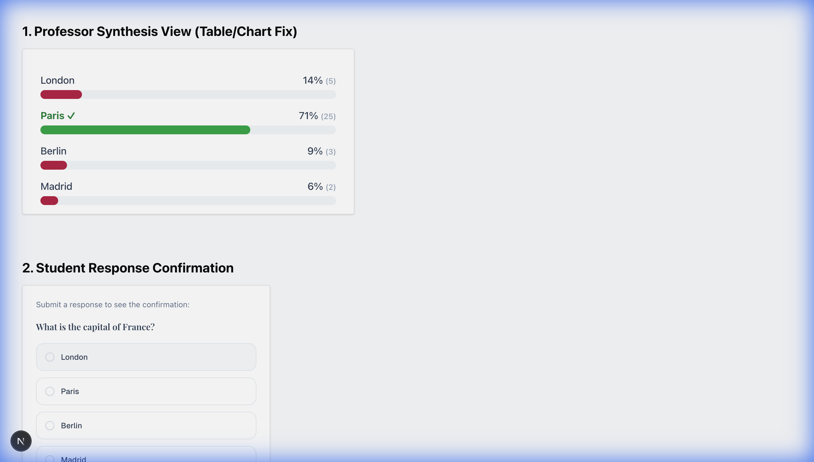
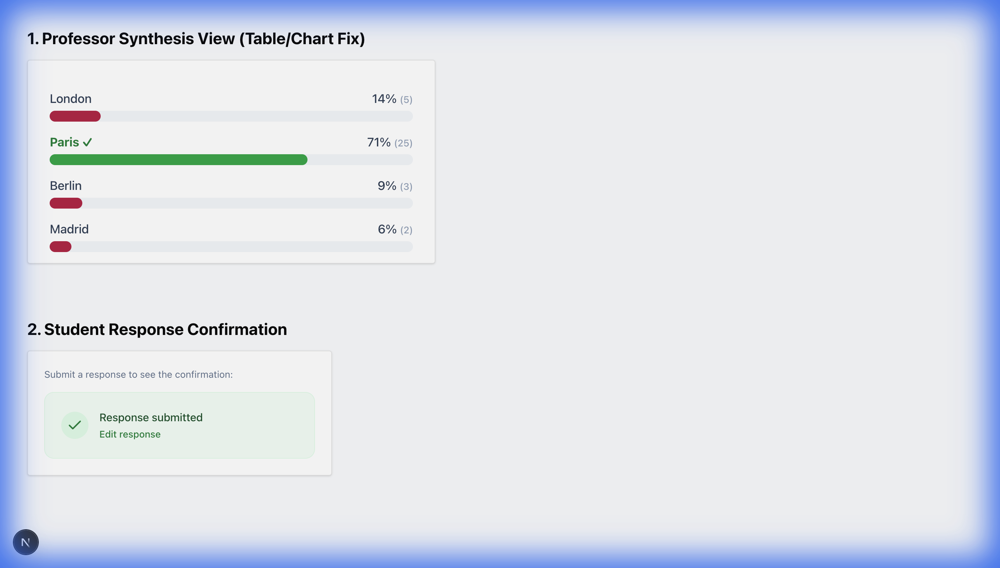

Please review the screenshots below for pixel-perfect precision.
Goal: Prevent text overlap in bar charts by moving labels to a dedicated column.

Labels "London", "Paris", etc. are now aligned left in the table layout.
Goal: Provide immediate green confirmation ("Response submitted") after answering.

Green checkmark and success text appear immediately replacing the input form.